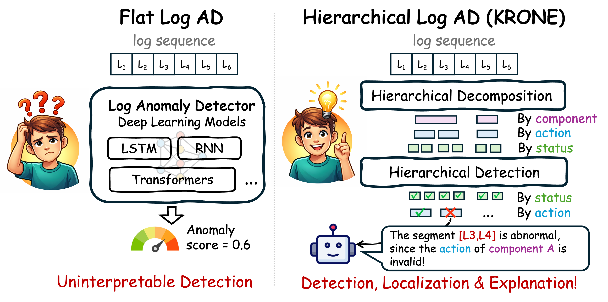
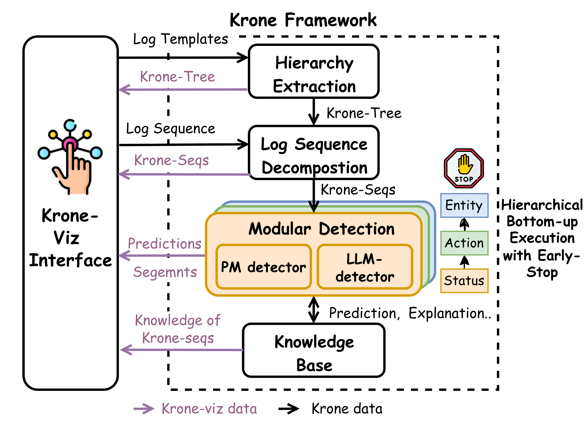

<!DOCTYPE html>
<html lang="en">
  <head>
    <meta charset="UTF-8" />
    <meta name="viewport" content="width=device-width, initial-scale=1.0" />
    <title>KRONE: Hierarchical and Modular Log Anomaly Detection</title>
    <script src="https://cdn.tailwindcss.com"></script>
    <script crossorigin src="https://unpkg.com/react@18/umd/react.production.min.js"></script>
    <script crossorigin src="https://unpkg.com/react-dom@18/umd/react-dom.production.min.js"></script>
    <script src="https://unpkg.com/@babel/standalone/babel.min.js"></script>
    <style>
      html { scroll-behavior: smooth; }
      body { font-family: ui-sans-serif, system-ui, -apple-system, "Segoe UI", Roboto, "Helvetica Neue", Arial, sans-serif; }
    </style>
  </head>
  <body>
    <div id="root"></div>

    <script type="text/babel" data-presets="react">
      function KroneHomepage() {
        const [menuOpen, setMenuOpen] = React.useState(false);
        const menuRef = React.useRef(null);

        React.useEffect(() => {
          const onDocClick = (e) => {
            if (menuRef.current && !menuRef.current.contains(e.target)) {
              setMenuOpen(false);
            }
          };
          document.addEventListener("mousedown", onDocClick);
          return () => document.removeEventListener("mousedown", onDocClick);
        }, []);

        const moreResearch = [
          { title: "Lei Ma — Homepage", href: "https://leima0324.github.io/" },
          { title: "KRONE Demo", href: "https://leima0324.github.io/KRONE_Demo_official/" },
        ];

        const iconProps = {
          width: 18,
          height: 18,
          viewBox: "0 0 24 24",
          fill: "none",
          stroke: "currentColor",
          strokeWidth: 2,
          strokeLinecap: "round",
          strokeLinejoin: "round",
        };
        const icons = {
          paper: (
            <svg {...iconProps}>
              <path d="M14 2H6a2 2 0 0 0-2 2v16a2 2 0 0 0 2 2h12a2 2 0 0 0 2-2V8z" />
              <polyline points="14 2 14 8 20 8" />
              <line x1="16" y1="13" x2="8" y2="13" />
              <line x1="16" y1="17" x2="8" y2="17" />
              <polyline points="10 9 9 9 8 9" />
            </svg>
          ),
          demo: (
            <svg {...iconProps}>
              <rect x="2" y="3" width="20" height="14" rx="2" ry="2" />
              <line x1="8" y1="21" x2="16" y2="21" />
              <line x1="12" y1="17" x2="12" y2="21" />
            </svg>
          ),
          slides: (
            <svg {...iconProps}>
              <path d="M2 3h20" />
              <path d="M21 3v11a2 2 0 0 1-2 2H5a2 2 0 0 1-2-2V3" />
              <path d="M7 21l5-5 5 5" />
            </svg>
          ),
          video: (
            <svg {...iconProps}>
              <polygon points="23 7 16 12 23 17 23 7" />
              <rect x="1" y="5" width="15" height="14" rx="2" ry="2" />
            </svg>
          ),
          x: (
            <svg {...iconProps}>
              <path d="M6 6l12 12M18 6L6 18" />
            </svg>
          ),
          huggingface: (
            <svg {...iconProps} viewBox="0 0 24 24" fill="none" stroke="currentColor" strokeWidth="1.8">
              <circle cx="12" cy="12" r="10" />
              <circle cx="8.5" cy="10" r="1.2" fill="currentColor" stroke="none" />
              <circle cx="15.5" cy="10" r="1.2" fill="currentColor" stroke="none" />
              <path d="M8.2 15.2c1.4 1.6 4.4 1.6 5.8 0" strokeLinecap="round" />
              <circle cx="6" cy="7" r="0.9" fill="currentColor" stroke="none" />
              <circle cx="8.5" cy="6.2" r="0.85" fill="currentColor" stroke="none" />
              <circle cx="12" cy="6" r="0.9" fill="currentColor" stroke="none" />
              <circle cx="15.5" cy="6.2" r="0.85" fill="currentColor" stroke="none" />
              <circle cx="18" cy="7" r="0.9" fill="currentColor" stroke="none" />
            </svg>
          ),
          code: (
            <svg {...iconProps} fill="currentColor" stroke="none">
              <path d="M12 .5C5.73.5.5 5.73.5 12c0 5.08 3.29 9.39 7.86 10.91.57.11.78-.25.78-.55 0-.27-.01-1.17-.02-2.12-3.2.7-3.87-1.36-3.87-1.36-.52-1.33-1.27-1.68-1.27-1.68-1.04-.71.08-.7.08-.7 1.15.08 1.76 1.18 1.76 1.18 1.02 1.75 2.68 1.25 3.34.95.1-.74.4-1.25.73-1.54-2.55-.29-5.23-1.28-5.23-5.69 0-1.26.45-2.28 1.18-3.09-.12-.29-.51-1.46.11-3.05 0 0 .97-.31 3.18 1.18.92-.26 1.91-.39 2.89-.39s1.97.13 2.89.39c2.21-1.49 3.18-1.18 3.18-1.18.62 1.59.23 2.76.11 3.05.73.81 1.18 1.83 1.18 3.09 0 4.42-2.69 5.39-5.25 5.68.41.36.77 1.06.77 2.14 0 1.54-.01 2.78-.01 3.16 0 .3.2.67.79.55A11.5 11.5 0 0 0 23.5 12C23.5 5.73 18.27.5 12 .5z" />
            </svg>
          ),
          examples: (
            <svg {...iconProps}>
              <line x1="8" y1="6" x2="21" y2="6" />
              <line x1="8" y1="12" x2="21" y2="12" />
              <line x1="8" y1="18" x2="21" y2="18" />
              <line x1="3" y1="6" x2="3.01" y2="6" />
              <line x1="3" y1="12" x2="3.01" y2="12" />
              <line x1="3" y1="18" x2="3.01" y2="18" />
            </svg>
          ),
        };

        const resources = [
          { title: "Paper", icon: icons.paper, href: "https://arxiv.org/abs/2602.07303" },
          { title: "Demo", icon: icons.demo, href: "#demo" },
          { title: "Slides", icon: icons.slides, href: "#" },
          { title: "Video", icon: icons.video, href: "#video" },
          { title: "Code", icon: icons.code, href: "https://github.com/LeiMa0324/Krone_official/tree/main?tab=readme-ov-file" },
          { title: "X", icon: icons.x, href: "https://x.com/" },
          { title: "HuggingFace", icon: icons.huggingface, href: "https://huggingface.co/" },
        ];

        const highlightGroups = [
          {
            group: "Framework Design",
            items: [
              {
                title: "Hierarchical Execution Recovery",
                text: "LLM automatically derives execution hierarchies (entity, action, status) from log templates, decomposing flat log sequences into coherent execution chunks (KRONE-Seqs).",
              },
              {
                title: "Modular Multi-Level Detection",
                text: "Performs targeted anomaly identification at each semantic level, enabling precise localization of where and why an anomaly occurs.",
              },
              {
                title: "Detector-Agnostic",
                text: "KRONE is a general-purpose hierarchy framework — plug in any log anomaly detector and benefit from the hierarchical decomposition. Contributions & extensions are welcome.",
              },
              {
                title: "Hybrid Detection Strategy",
                text: "Dynamically routes between efficient local pattern matching and LLM-powered nested-aware detection, reducing LLM usage to a small fraction of test data.",
              },
            ],
          },
          {
            group: "Knowledge Accumulation & Interpretability",
            items: [
              {
                title: "Human-Interactive Friendly",
                text: "Modular design with transparent intermediate outputs (KRONE-Tree, KRONE-Seqs, knowledge base) enables engineers to inspect and validate results at every stage.",
              },
              {
                title: "Knowledge Caching & Reuse",
                text: "KRONE-Seq embeddings, summaries, and LLM detection results are cached and reusable across log sequences, dramatically reducing redundant LLM calls (data space 117.3× ↓, resource 43.7× ↓).",
              },
            ],
          },
          {
            group: "Resource Efficiency",
            items: [
              {
                title: "Minimal LLM Cost",
                text: "LLM is invoked on only 1.1%–3.3% of the test data, enabling scalable LLM-based anomaly detection on large-scale production logs without prohibitive API expenses.",
              },
            ],
          },
          {
            group: "Performance",
            items: [
              {
                title: "State-of-the-Art Accuracy",
                text: "KRONE improves F1-score by 10.07% (82.76% → 92.83%) over prior methods on three public benchmarks and one industrial dataset from ByteDance Cloud.",
              },
            ],
          },
        ];

        const bibtex = `@misc{ma2026kronehierarchicalmodularlog,
      title={KRONE: Hierarchical and Modular Log Anomaly Detection},
      author={Lei Ma and Jinyang Liu and Tieying Zhang and Peter M. VanNostrand and Dennis M. Hofmann and Lei Cao and Elke A. Rundensteiner and Jianjun Chen},
      year={2026},
      eprint={2602.07303},
      archivePrefix={arXiv},
      primaryClass={cs.DB},
      url={https://arxiv.org/abs/2602.07303},
}`;

        return (
          <div className="min-h-screen bg-white text-neutral-900">
            <header className="sticky top-0 z-50 bg-white/95 backdrop-blur">
              <div className="mx-auto flex max-w-6xl items-center justify-center gap-6 px-6 pb-3 pt-8">
                <a
                  href="https://leima0324.github.io/"
                  target="_blank"
                  rel="noopener noreferrer"
                  aria-label="Lei Ma's homepage"
                  className="text-neutral-700 transition hover:text-black"
                >
                  <svg className="h-5 w-5" viewBox="0 0 24 24" fill="none" stroke="currentColor" strokeWidth="2" strokeLinecap="round" strokeLinejoin="round">
                    <path d="M3 12l9-9 9 9" />
                    <path d="M5 10v10a1 1 0 0 0 1 1h4v-6h4v6h4a1 1 0 0 0 1-1V10" />
                  </svg>
                </a>

                <div className="relative" ref={menuRef}>
                  <button
                    type="button"
                    onClick={() => setMenuOpen((v) => !v)}
                    className="flex items-center gap-2 text-sm font-medium text-neutral-700 transition hover:text-black"
                    aria-expanded={menuOpen}
                  >
                    More of Our Research
                    <svg
                      className={`h-4 w-4 text-blue-600 transition-transform ${menuOpen ? "rotate-180" : ""}`}
                      viewBox="0 0 24 24"
                      fill="none"
                      stroke="currentColor"
                      strokeWidth="2.5"
                      strokeLinecap="round"
                      strokeLinejoin="round"
                    >
                      <polyline points="6 9 12 15 18 9" />
                    </svg>
                  </button>

                  {menuOpen && (
                    <div className="absolute left-1/2 top-full z-50 mt-2 w-56 -translate-x-1/2 overflow-hidden rounded-xl border border-neutral-200 bg-white py-1 shadow-lg">
                      {moreResearch.map((item) => (
                        <a
                          key={item.title}
                          href={item.href}
                          target="_blank"
                          rel="noopener noreferrer"
                          onClick={() => setMenuOpen(false)}
                          className="block px-4 py-2 text-sm text-neutral-700 transition hover:bg-neutral-100 hover:text-black"
                        >
                          {item.title}
                        </a>
                      ))}
                    </div>
                  )}
                </div>
              </div>
            </header>

            <main id="top" className="mx-auto max-w-6xl px-6 pb-20 pt-12">
              {/* Hero */}
              <section className="flex flex-col items-center border-b border-neutral-200 pb-14 text-center">
                <div className="mb-4 inline-flex rounded-full border border-neutral-200 px-3 py-1 text-xs font-medium text-neutral-700">
                  Accepted at ICDE 2026
                </div>
                <h1 className="max-w-4xl text-4xl font-semibold leading-tight tracking-tight md:text-6xl">
                  KRONE: Hierarchical and Modular Log Anomaly Detection
                </h1>
                <p className="mt-6 max-w-4xl text-base leading-7 text-neutral-800 md:text-lg">
                  <a href="https://leima0324.github.io/" target="_blank" rel="noopener noreferrer" className="underline hover:text-black">Lei Ma</a><sup>∗</sup>, <a href="https://jinyang88.github.io/" target="_blank" rel="noopener noreferrer" className="underline hover:text-black">Jinyang Liu</a><sup>†</sup>, <a href="https://tieyingzhang.github.io/home/" target="_blank" rel="noopener noreferrer" className="underline hover:text-black">Tieying Zhang</a><sup>†</sup>, <a href="https://petervannostrand.github.io/" target="_blank" rel="noopener noreferrer" className="underline hover:text-black">Peter M. VanNostrand</a><sup>∗</sup>, <a href="https://www.planethofmann.com/dennis/" target="_blank" rel="noopener noreferrer" className="underline hover:text-black">Dennis M. Hofmann</a><sup>∗</sup>, <a href="https://www2.cs.arizona.edu/~caolei/" target="_blank" rel="noopener noreferrer" className="underline hover:text-black">Lei Cao</a><sup>‡</sup>, <a href="https://www.wpi.edu/people/faculty/rundenst" target="_blank" rel="noopener noreferrer" className="underline hover:text-black">Elke A. Rundensteiner</a><sup>∗</sup>, <a href="https://www.linkedin.com/in/jianjun-chen/" target="_blank" rel="noopener noreferrer" className="underline hover:text-black">Jianjun Chen</a><sup>†</sup>
                </p>
                <p className="mt-3 max-w-4xl text-sm leading-6 text-neutral-600">
                  <sup>∗</sup>Worcester Polytechnic Institute, Worcester, USA &nbsp;·&nbsp;
                  <sup>†</sup>ByteDance Inc., San Jose, USA &nbsp;·&nbsp;
                  <sup>‡</sup>University of Arizona, Tucson, USA
                </p>
                <div className="mt-8 w-full max-w-md overflow-hidden rounded-2xl border border-neutral-200 bg-neutral-50 p-3 shadow-sm">
                  
                </div>
                <p className="mt-4 max-w-3xl text-base leading-8 text-neutral-700 md:text-lg">
                  KRONE revisits flat log analysis through a hierarchical lens. It reconstructs execution semantics directly from logs, decomposes traces into reusable execution units, and enables scalable, interpretable anomaly detection with selective LLM reasoning.
                </p>
                <div className="mt-4 flex flex-wrap justify-center gap-3">
                  {resources.map((item) => {
                    const isExternal = item.href.startsWith("http");
                    return (
                      <a
                        key={item.title}
                        href={item.href}
                        target={isExternal ? "_blank" : undefined}
                        rel={isExternal ? "noopener noreferrer" : undefined}
                        className="inline-flex items-center gap-2 rounded-full bg-black px-5 py-3 text-sm font-medium text-white shadow-sm transition hover:opacity-90"
                      >
                        {item.icon}
                        {item.title}
                      </a>
                    );
                  })}
                </div>
                <div className="mt-10 w-full max-w-full overflow-hidden rounded-3xl border border-neutral-200 bg-neutral-50 shadow-sm">
                  <div className="grid gap-4 sm:grid-cols-2 lg:grid-cols-4">
                    <div className="rounded-2xl bg-white p-5 text-center shadow-sm">
                      <p className="text-xs font-semibold uppercase tracking-[0.2em] text-neutral-500">Performance</p>
                      <p className="mt-3 text-2xl font-semibold text-black">+10.07%</p>
                      <p className="mt-2 text-sm text-neutral-600">F1 improvement over prior methods</p>
                    </div>
                    <div className="rounded-2xl bg-white p-5 text-center shadow-sm">
                      <p className="text-xs font-semibold uppercase tracking-[0.2em] text-neutral-500">Accuracy</p>
                      <p className="mt-3 text-2xl font-semibold text-black">87.98%</p>
                      <p className="mt-2 text-sm text-neutral-600">Accuracy with hierarchy vs 42.49%</p>
                    </div>
                    <div className="rounded-2xl bg-white p-5 text-center shadow-sm">
                      <p className="text-xs font-semibold uppercase tracking-[0.2em] text-neutral-500">Data Cardinality</p>
                      <p className="mt-3 text-2xl font-semibold text-black">117.3×</p>
                      <p className="mt-2 text-sm text-neutral-600">Data space reduction through caching</p>
                    </div>
                    <div className="rounded-2xl bg-white p-5 text-center shadow-sm">
                      <p className="text-xs font-semibold uppercase tracking-[0.2em] text-neutral-500">LLM Resource</p>
                      <p className="mt-3 text-2xl font-semibold text-black">1.1%–3.3%</p>
                      <p className="mt-2 text-sm text-neutral-600">LLM usage on test data — 55.07× ↓ vs SOTA LLM detection</p>
                    </div>
                  </div>
                </div>
              </section>

              {/* Video */}
              <section id="video" className="border-b border-neutral-200 py-14">
                <div className="mb-8 text-center">
                  <p className="text-sm font-semibold uppercase tracking-[0.18em] text-neutral-500">Video</p>
                  <h2 className="mt-3 text-3xl font-semibold tracking-tight md:text-4xl">
                    <a href="https://leima0324.github.io/KRONE_Demo_official/" target="_blank" rel="noopener noreferrer" className="underline hover:text-black">
                      Watch the KRONE Demonstration and try it out.
                    </a>
                  </h2>
                </div>
                <div className="mx-auto w-full max-w-3xl overflow-hidden rounded-3xl border border-neutral-200 bg-neutral-50 shadow-sm">
                  <div className="aspect-video w-full">
                    <iframe
                      className="h-full w-full"
                      src="https://www.youtube.com/embed/L_QpMUqXJuY"
                      title="KRONE Project Video"
                      frameBorder="0"
                      allow="accelerometer; autoplay; clipboard-write; encrypted-media; gyroscope; picture-in-picture; web-share"
                      allowFullScreen
                    />
                  </div>
                </div>
              </section>

              <section id="motivation" className="border-b border-neutral-200 py-14">
                <div className="mb-10 text-center">
                  <p className="text-sm font-semibold uppercase tracking-[0.18em] text-neutral-500">Motivation</p>
                  <h2 className="mt-3 text-3xl font-semibold tracking-tight md:text-4xl">
                    Why KRONE Matters in the LLM Era
                  </h2>
                  <p className="mx-auto mt-5 max-w-3xl text-base leading-7 text-neutral-700 md:text-lg">
                    KRONE provides <strong className="text-neutral-900">full support for resource-optimized, AI-empowered log analysis</strong> — scaling intelligence through hierarchical structure, not brute-force LLM usage.
                  </p>
                </div>

                <div className="mx-auto max-w-3xl space-y-6">
                  <div className="rounded-3xl border border-neutral-200 bg-white p-8">
                    <p className="text-[15px] leading-7 text-neutral-700">
                      Applying LLMs directly to raw log sequences doesn't scale — long sequences break reasoning, per-sequence inference is prohibitively expensive, and flat logs lack structure.
                    </p>
                    <p className="mt-4 text-[15px] leading-7 text-neutral-700">
                      KRONE reframes log anomaly detection as a <strong>hierarchical reasoning problem</strong>, delivering end-to-end capabilities for efficient, interpretable AI-powered log analysis:
                    </p>
                    <ul className="mt-5 space-y-3 text-[15px] leading-7 text-neutral-900">
                      {[
                        "Structured reasoning over semantic execution units, not flat sequences",
                        "Selective and minimal LLM use — only 1.1%–3.3% of test data",
                        "Reusable knowledge across sequences (data space 117.3× ↓, resource 43.7× ↓)",
                        "Interpretable multi-level localization and explanations",
                      ].map((text) => (
                        <li key={text} className="flex gap-3">
                          <span className="mt-1 flex h-5 w-5 shrink-0 items-center justify-center rounded-full bg-neutral-900 text-white">
                            <svg className="h-3 w-3" viewBox="0 0 24 24" fill="none" stroke="currentColor" strokeWidth="3" strokeLinecap="round" strokeLinejoin="round">
                              <polyline points="20 6 9 17 4 12" />
                            </svg>
                          </span>
                          <span>{text}</span>
                        </li>
                      ))}
                    </ul>
                  </div>

                  <div className="rounded-2xl border-l-4 border-neutral-900 bg-neutral-50 px-6 py-5">
                    <p className="text-xs font-semibold uppercase tracking-[0.18em] text-neutral-500">Key Takeaway</p>
                    <p className="mt-2 text-[15px] leading-7 text-neutral-800">
                      KRONE enables scalable LLM-based log analysis <strong>not by increasing model usage</strong>, but by <strong>reducing complexity through hierarchical abstraction and modular reasoning of the log data</strong>.
                    </p>
                  </div>
                </div>
              </section>

              {/* Overview */}
              <section id="overview" className="border-b border-neutral-200 py-14">
                <div className="mb-8 text-center">
                  <p className="text-sm font-semibold uppercase tracking-[0.18em] text-neutral-500">Overview</p>
                  <h2 className="mt-3 text-3xl font-semibold tracking-tight md:text-4xl">
                    Hierarchical Log Abstraction
                  </h2>
                </div>

                <div className="mx-auto grid w-full max-w-6xl items-start gap-10 md:grid-cols-2">
                  <figure className="overflow-hidden rounded-3xl border border-neutral-200 bg-neutral-50 p-4 shadow-sm">
                    
                  </figure>

                  <div className="space-y-5 text-[15px] leading-7 text-neutral-700">
                    <p>
                      Logs originate from nested component executions with clear structural boundaries, but this organization is lost when stored as flat sequences. <strong>KRONE is the first hierarchical anomaly detection framework</strong> that automatically derives execution hierarchies from flat logs and performs modular multi-level detection.
                    </p>
                    <p>
                      At its core, the <em>KRONE Log Abstraction Model</em> recursively decomposes log sequences into coherent execution chunks (<em>KRONE Seqs</em>), turning sequence-level detection into a set of modular KRONE Seq-level tasks. A hybrid detection mechanism routes between a fast local-context detector and a nested-aware detector augmented with LLM reasoning, further accelerated by cached result reuse and early-exit optimization.
                    </p>

                    <div className="rounded-2xl bg-neutral-900 px-6 py-4 text-center font-mono text-sm tracking-wide text-neutral-100">
                      ROOT → ENTITY → ACTION → STATUS
                    </div>

                    <ul className="space-y-2 text-[15px] leading-7">
                      <li><strong>Entity:</strong> system modules or components (e.g., <code className="rounded bg-neutral-100 px-1.5 py-0.5 font-mono text-xs">PacketResponder</code>, <code className="rounded bg-neutral-100 px-1.5 py-0.5 font-mono text-xs">block</code>)</li>
                      <li><strong>Action:</strong> operations performed (e.g., <code className="rounded bg-neutral-100 px-1.5 py-0.5 font-mono text-xs">creating</code>, <code className="rounded bg-neutral-100 px-1.5 py-0.5 font-mono text-xs">receiving</code>, <code className="rounded bg-neutral-100 px-1.5 py-0.5 font-mono text-xs">terminating</code>)</li>
                      <li><strong>Status:</strong> outcomes (e.g., <code className="rounded bg-neutral-100 px-1.5 py-0.5 font-mono text-xs">success</code>, <code className="rounded bg-neutral-100 px-1.5 py-0.5 font-mono text-xs">failure</code>, <code className="rounded bg-neutral-100 px-1.5 py-0.5 font-mono text-xs">exception</code>)</li>
                    </ul>
                  </div>
                </div>
              </section>

              {/* Citation */}
              <section id="citation" className="py-14">
                <div className="mb-8 text-center">
                  <p className="text-sm font-semibold uppercase tracking-[0.18em] text-neutral-500">Citation</p>
                  <h2 className="mt-3 text-3xl font-semibold tracking-tight md:text-4xl">
                    Cite Our Paper
                  </h2>
                  <p className="mx-auto mt-4 max-w-2xl text-sm leading-7 text-neutral-600">
                    If you find this work useful, please cite:
                  </p>
                </div>
                <pre className="mx-auto max-w-4xl overflow-x-auto rounded-2xl bg-neutral-900 p-6 text-xs leading-6 text-neutral-100"><code>{bibtex}</code></pre>
              </section>
            </main>

            <footer className="bg-neutral-900 py-12 text-neutral-400">
              <div className="mx-auto max-w-3xl px-6">
                <div className="flex justify-center gap-8">
                  <a
                    href="https://arxiv.org/pdf/2602.07303.pdf"
                    aria-label="Paper PDF"
                    target="_blank"
                    rel="noopener noreferrer"
                    className="text-neutral-300 transition hover:text-white"
                  >
                    <svg
                      className="h-8 w-8"
                      viewBox="0 0 24 24"
                      fill="none"
                      stroke="currentColor"
                      strokeWidth="2"
                      strokeLinecap="round"
                      strokeLinejoin="round"
                    >
                      <path d="M14 2H6a2 2 0 0 0-2 2v16a2 2 0 0 0 2 2h12a2 2 0 0 0 2-2V8z" />
                      <polyline points="14 2 14 8 20 8" />
                      <line x1="16" y1="13" x2="8" y2="13" />
                      <line x1="16" y1="17" x2="8" y2="17" />
                    </svg>
                  </a>
                  <a
                    href="https://github.com/LeiMa0324/Krone_official"
                    aria-label="GitHub"
                    target="_blank"
                    rel="noopener noreferrer"
                    className="text-neutral-300 transition hover:text-white"
                  >
                    <svg className="h-8 w-8" viewBox="0 0 24 24" fill="currentColor">
                      <path d="M12 .5C5.73.5.5 5.73.5 12c0 5.08 3.29 9.39 7.86 10.91.57.11.78-.25.78-.55 0-.27-.01-1.17-.02-2.12-3.2.7-3.87-1.36-3.87-1.36-.52-1.33-1.27-1.68-1.27-1.68-1.04-.71.08-.7.08-.7 1.15.08 1.76 1.18 1.76 1.18 1.02 1.75 2.68 1.25 3.34.95.1-.74.4-1.25.73-1.54-2.55-.29-5.23-1.28-5.23-5.69 0-1.26.45-2.28 1.18-3.09-.12-.29-.51-1.46.11-3.05 0 0 .97-.31 3.18 1.18.92-.26 1.91-.39 2.89-.39s1.97.13 2.89.39c2.21-1.49 3.18-1.18 3.18-1.18.62 1.59.23 2.76.11 3.05.73.81 1.18 1.83 1.18 3.09 0 4.42-2.69 5.39-5.25 5.68.41.36.77 1.06.77 2.14 0 1.54-.01 2.78-.01 3.16 0 .3.2.67.79.55A11.5 11.5 0 0 0 23.5 12C23.5 5.73 18.27.5 12 .5z" />
                    </svg>
                  </a>
                </div>

                {/* MapMyVisitors visitor tracker */}
                <div className="mx-auto mt-8 flex justify-center">
                  <a
                    href="https://mapmyvisitors.com/web/1c439"
                    title="Visit tracker"
                    target="_blank"
                    rel="noopener noreferrer"
                    className="inline-block"
                  >
                    
                  </a>
                </div>

                <div className="mt-8 space-y-4 text-sm leading-7">
                  <p>
                    This website is licensed under a{" "}
                    <a
                      href="http://creativecommons.org/licenses/by-sa/4.0/"
                      target="_blank"
                      rel="noopener noreferrer"
                      className="text-blue-400 hover:underline"
                    >
                      Creative Commons Attribution-ShareAlike 4.0 International License
                    </a>
                    .
                  </p>
                  <p>
                    This means you are free to borrow the{" "}
                    <a
                      href="https://github.com/nerfies/nerfies.github.io"
                      target="_blank"
                      rel="noopener noreferrer"
                      className="text-blue-400 hover:underline"
                    >
                      source code
                    </a>{" "}
                    of this website, we just ask that you link back to this page in the footer. Please remember to remove the analytics code included in the header of the website which you do not want on your website.
                  </p>
                </div>
              </div>
            </footer>
          </div>
        );
      }

      const root = ReactDOM.createRoot(document.getElementById("root"));
      root.render(<KroneHomepage />);
    </script>
  </body>
</html>
